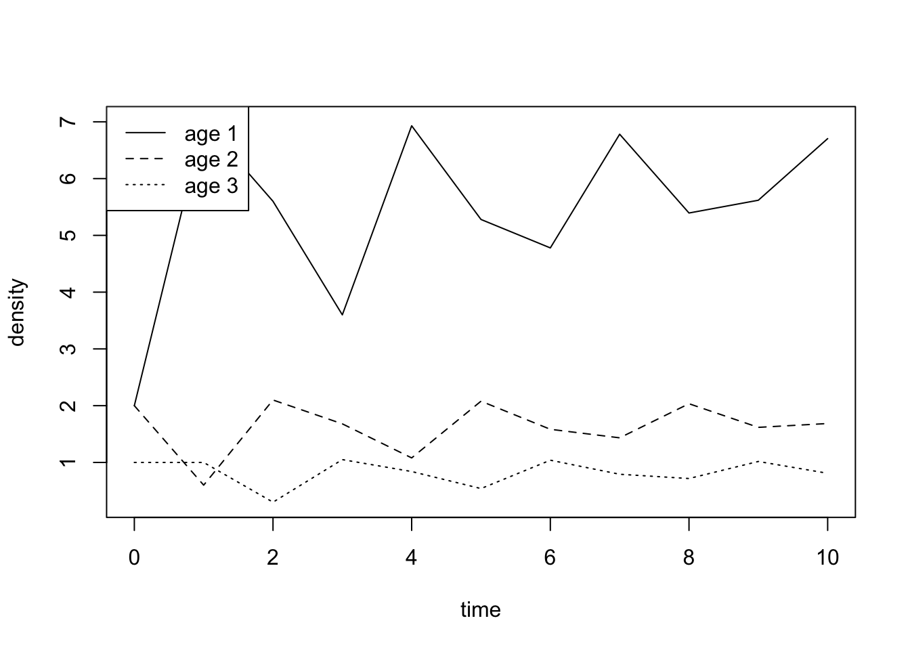
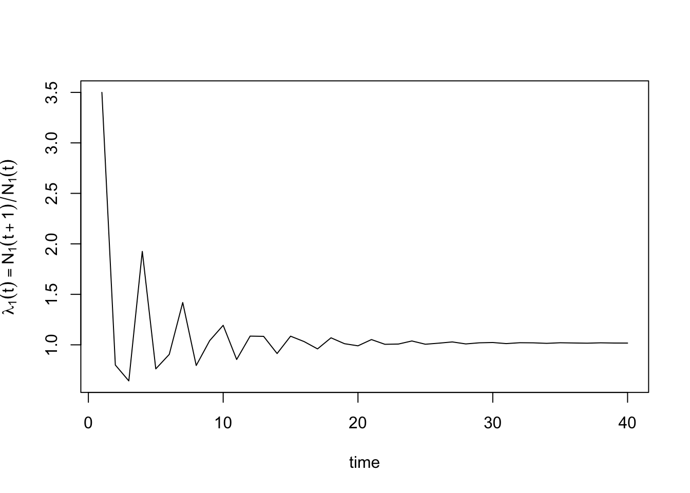

Let us consider an age-structured population with three age-classes with vital rates resulting in the population projection matrix
\[ \mathsf{L} = \begin{pmatrix} 0 & f_2 & f_3\\ s_1 & 0 & 0\\ 0 & s_2 & 0 \end{pmatrix} = \begin{pmatrix} 0 & 1 & 5\\ 0.3 & 0 & 0\\ 0 & 0.5 & 0 \end{pmatrix}. \]
In the following, we want to investigate the dynamics of such a population as described by the difference equation
\[ \mathbf{N}(t+1)=\mathsf{L}\mathbf{N}(t), \]
where \(\mathbf{N}(t+1)=(N_{1}(t+1),N_{2}(t+1),N_{3}(t+1))^\mathrm{T}\) and \(\mathbf{N}(t)=(N_{1}(t),N_{2}(t),N_{3}(t))^\mathrm{T}\) are three-dimensional column vectors. The state of the population (its p-state) t-time steps into the future is then given by
\[ \mathbf{N}(t)=\mathsf{L}^t*\mathbf{N}(0). \]
In this exercise, you use R to explore this dynamics. This exercise also serves to introduce some R-code that you will need later for your independent project work.
L <- matrix(
c(0, 1 , 5, 0.3, 0, 0, 0, 0.5, 0), # we construct a matrix by giving all its entries in a single vector, which we then split into...
nrow = 3, # ...this many rows and...
ncol = 3, # ...and this many columns
byrow = T) # fill matrix by rows
L # print the matrix## [,1] [,2] [,3]
## [1,] 0.0 1.0 5
## [2,] 0.3 0.0 0
## [3,] 0.0 0.5 0In the following, we revisit some code related to matrix manipulation.
# The entry in the m-th row and n-th column of the matrix L can be extracted with L[m ,n].
L[3, 2] # entry in 3rd row and 2nd column
# The entries in the m-th row of L can be extracted with L[m, ] and, similarly, the entries in the n-th column can be extracted with L[ ,n].
L[2, ] # the 2nd row
L[ ,3] # the 3rd column
#The transpose of a matrix, L^T is the matrix mirrored over its diagonal. The R-command is t(L).
t(L) # transpose of LNow let us start analyzing the dynamics of the model defined by the above matrix \(\mathsf L\). We start with the analysis of the model by producing a time series based on \(\mathsf L\) and a vector of initial population sizes, e.g., \(\mathbf{N}(0)=(2,2,1)\).
N.0 <- c(2,2,1) # creates vector N.0 of initial densities
N.1 <- L %*% N.0 # produces the vector N.1 by multiplying L with N.0. Note that %*% indicates matrix multiplication in R
N.1 # show N.1## [,1]
## [1,] 7.0
## [2,] 0.6
## [3,] 1.0This projects the population one time step into the future. Of course, we want to iterate this step many times. There are many different ways of programming the same task in R. One way to iterate the above calculation t-times goes as follows.
length <- 10 # length of the time series
time.series <- matrix(N.0, nrow = 3) # creates a matrix with three rows, called time.series, with N.0 in the first column. This is used to store the time series.
for (i in 1:length){# iterates the multiplication L.N(t) as often as specified by the parameter length
time.series <- cbind(time.series, L %*% time.series[ , i]) # executes multiplication of the matrix L with current population vector and stores the result as a new column to the matrix time.series
}
matplot(0:length, t(time.series), type="l", lty=1:3, col = 1, ylab = "density", xlab = "time") # plots the time.series for each age-class, note that we have to transpose the matrix time.series in order to obtain the correct plot
legend("topleft", legend = c("age 1", "age 2", "age 3"), lty = 1:3, col = 1, bty = "N") # adds a legend
What do you observe? Increase the length of the time series to length=40. What do you observe?
It is instructive to produce the same plot but with population densities on a log-scale. This can be done by adding the option log="y" to the plot command.
matplot(0:length, t(time.series), type="l", log="y", lty=1:3, col = 1, ylab = "log density", xlab = "time") # adding the option log="y" shows the y-axis on a logarithmic scale
legend("topleft", legend = c("age 1", "age 2", "age 3"), lty = 1:3, col = 1, bty = "N")What do you conclude from this? Finally, we can produce a plot of the total density \(N_{\mathrm{tot}}(t)=N_1(t)+N_2(t)+N_3(t)\), i.e., where we sum over all three age-classes.
N.tot <- colSums(time.series) # produces vector of total densities by summing over the values in each column of the matrix time.series
matplot(0:length, N.tot, type="l", ylab = "total population size", xlab = "time")
matplot(0:length, N.tot, type="l", log="y", ylab = "log total population size", xlab = "time") # log scaleIn the population projection matrix, change \(s_1=0.3\) to \(s_1=0.25\). Then repeat the above steps for length=40. How does this change the population dynamics?
Now we know how to simulate the dynamics of a structured population. Next, let us investigate the dynamics in a bit more detail.
In unstructured populations, we have
\[ N(t+1)=\lambda N(t) \Longleftrightarrow \lambda=\frac{N(t+1)}{N(t)}. \]
Can we calculate something that is analogous to \(\lambda\) but for structured populations? More specifically, can we find a single quantity that informs us whether a structured population is growing or shrinking in the long run? Let us look at the ratio of densities at time step t and (t+1) for age class j. We denote this quantity by \(\lambda_j(t)\), i.e.,
\[ \lambda_j(t) = \frac{N_j(t+1)}{N_j(t)}\,\,\,{\mathrm{for}}\,\,\, j\in\{1,2,3\}. \]
We can do the same for the total population size, i.e.,
\[ \lambda_{\mathrm{tot}}(t) = \frac{N_{\mathrm{tot}}(t+1)}{N_{\mathrm{tot}}(t)}. \]
Let us begin by calculating this quantity for age-class 1 based on a time series of length 40. Please first change the survival of one-year old individuals back to \(s_1=0.3\).
Lambda.1 <- c()
for (i in 1:length){
Lambda.1[i] <- time.series[1, i + 1]/time.series[1, i] # we divide the population size of two consecutive time steps for class 1 by each other and store the result in Lambda.1
}
plot(1:length, Lambda.1, type="l", ylab = expression(lambda[1](t)=='N'[1](t + 1)/'N'[1](t)), xlab = "time")
What do you observe?
To produce the same plot for the second and third age class you have to “select” the entries from the second and third row, respectively, from the matrix time.series that contains the densities for these age classes.
We can do the same calculation for the total population size \(N_{\mathrm{tot}}\). Before you actually do this calculation, think for a second: What do you expect is the outcome?
Lambda.tot <- c()
for (i in 1:length){
Lambda.tot[i] <- N.tot[i+1]/N.tot[i]
}
plot(1:length, Lambda.tot, type="l", ylab = expression(lambda[tot](t)=='N'[tot](t+1)/'N'[tot](t)), xlab = "time")We can have a look at the last value of \(\lambda\), i.e., \(\lambda(t)=N_{\mathrm{tot}}(t+1)/N_{\mathrm{tot}}(t)\):
Lambda.1[length] # growth factor for age-class 1 at the end of the time series
Lambda.2[length] # growth factor for age-class 2 at the end of the time series (only works if you did the calculations for this age-class)
Lambda.3[length] # growth factor for age-class 3 at the end of the time series (only works if you did the calculations for this age-class)
Lambda.tot[length] # growth factor for the total population sizeWhat do you observe? What do you conclude from your results about the existence of a single quantity that allows to predict whether a population grows or shrinks?
How do the dynamics of a time series depend on the population vector \(\mathbf N(0)\) specifying the initial population size? To investigate this question, we can repeat the above computations but for different initial population vectors \(\mathbf N(0)\), say, ten different such vectors. The following code facilitates the computation of many such time series.
length <- 40
N.0 <- c(c(1,0,0), c(0,1,0), c(0,0,1), c(2,0,0), c(1,1,0), c(1,0,1), c(0,1,1), c(2,1,0), c(2,0,1), c(0,2,1)) # vector of ten different initial conditions N(0)
ten.time.series <- matrix(0, nrow = 10 * nrow(L), ncol = length + 1) # matrix for storing ten time series; note that this matrix has 10 * 3 = 30 rows (make yourself clear why)
ten.time.series[ , 1] <- N.0 # storing the initial condition in the first column
for (i in 0:9){# this nested for-loop executes the calculations for the 10 different time series
for (j in 1:length){
ten.time.series[(1 + 3 * i):(3 + 3 * i), (j + 1)] <- L %*% ten.time.series[(1 + 3 * i):(3 + 3 * i), j]
} # note that there is some "complicated" stuff going on so as to add the new population vector in the correct place in the matrix ten.time.series
}Next, we plot the time series for each age-class for all ten time series.
ten.age1 <- ten.time.series[c(1, 4, 7, 10, 13, 16, 19, 22, 25, 28), ] # 10 time series for age class 1
ten.age2 <- ten.time.series[c(2, 5, 8, 11, 14, 17, 20, 23, 26, 29), ] # 10 time series for age class 2
ten.age3 <- ten.time.series[c(3, 6, 9, 12, 15, 18, 21, 24, 27, 30), ] # 10 time series for age class 3
par(mfrow = c(1, 3)) # arranges the next three plots in a single figure
matplot(0:length, t(ten.age1), type="l", col = rainbow(10), ylab = "density age-class 1", xlab = "time")
matplot(0:length, t(ten.age2), type="l", col = rainbow(10), ylab = "density age-class 2", xlab = "time")
matplot(0:length, t(ten.age3), type="l", col = rainbow(10), ylab = "density age-class 3", xlab = "time")By adding the plot option log="y", you can plot the y-axis on a log scale. What do you observe?
Next, let us investigate how the growth factor \(\lambda\) depends on the initial population vector \(\mathbf N(0)\)?
ten.lambda1 <- matrix(0, nrow = 10, ncol = length)
ten.lambda2 <- matrix(0, nrow = 10, ncol = length)
ten.lambda3 <- matrix(0, nrow = 10, ncol = length)
age1 <- c(1, 4, 7, 10, 13, 16, 19, 22, 25, 28) # indices indicating the rows in the matrix ten.time.series containing age-class 1
age2 <- c(2, 5, 8, 11, 14, 17, 20, 23, 26, 29) # indices indicating the rows in the matrix ten.time.series containing age-class 2
age3 <- c(3, 6, 9, 12, 15, 18, 21, 24, 27, 30) # indices indicating the rows in the matrix ten.time.series containing age-class 3
par(mfrow = c(1, 3)) # arranges the next three plots in a single figure
for (i in 1:length){
ten.lambda1[ , i] <- ten.time.series[age1,i+1]/ten.time.series[age1,i]
}
matplot(1:length, t(ten.lambda1), type="l", ylim=c(0,5), col = rainbow(10), ylab = expression(lambda[1](t)=='n'[1](t+1)/'n'[1](t)), xlab = "time")
for (i in 1:length){
ten.lambda2[ , i] <- ten.time.series[age2, i + 1]/ten.time.series[age2, i]
}
matplot(1:length, t(ten.lambda2), type="l", ylim=c(0,5), col = rainbow(10), ylab = expression(lambda[2](t)=='n'[2](t+1)/'n'[2](t)), xlab = "time")
for (i in 1:length){
ten.lambda3[ , i] <- ten.time.series[age3, i + 1]/ten.time.series[age3, i]
}
matplot(1:length, t(ten.lambda3), type="l", ylim=c(0,5), col = rainbow(10), ylab = expression(lambda[3](t)=='n'[3](t+1)/'n'[3](t)), xlab = "time")What do you observe? What do you conclude from your results about the existence of a single quantity that allows to predict population growth and whether such a quantity depends on initial conditions?
Can we use this number to predict whether a population growth or shrinks in the long run? To investigate this question let us modify the above population projection matrix \(\mathsf L\). More specifically, please change \(s_1=0.3\) to \(s_1=0.25\). Plot the time series for this new matrix \(\mathsf L\) for one initial condition \(\mathbf N(0)\) and compute \(\lambda\). What do you conclude?
Note that for later exercises you will have to be able to compute the growth factor \(\lambda\) for other matrices.